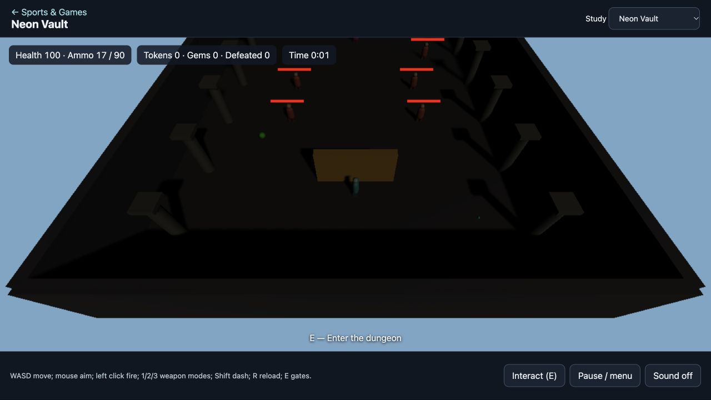
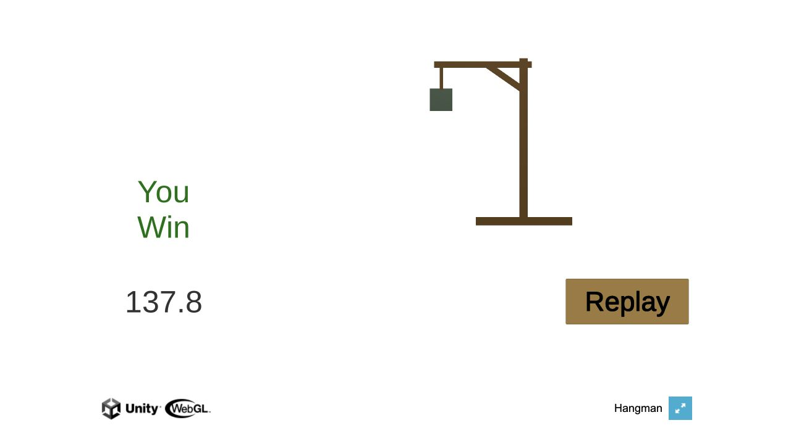
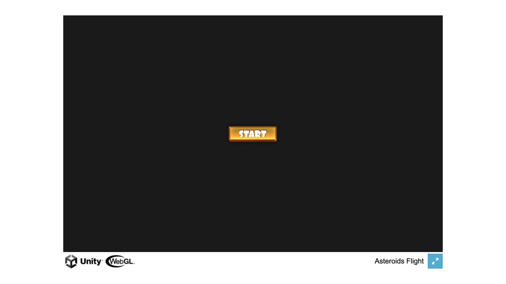
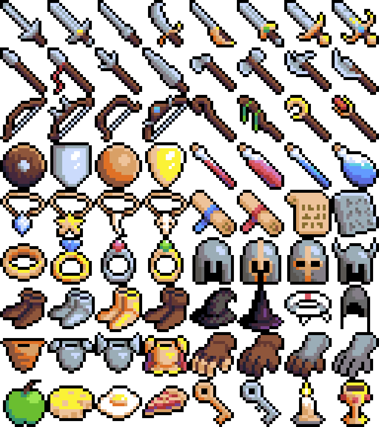
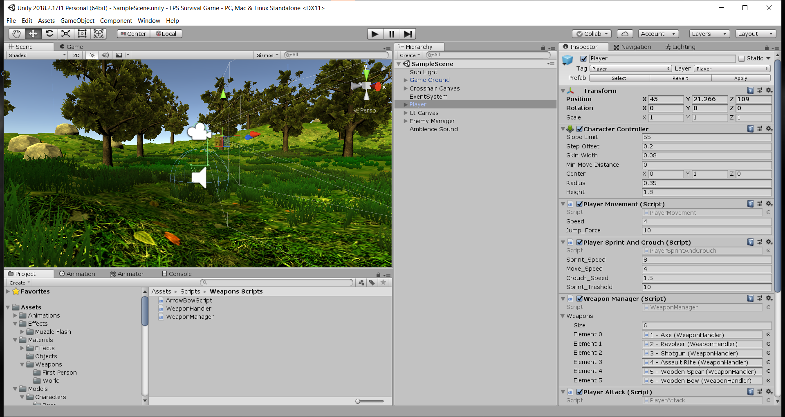
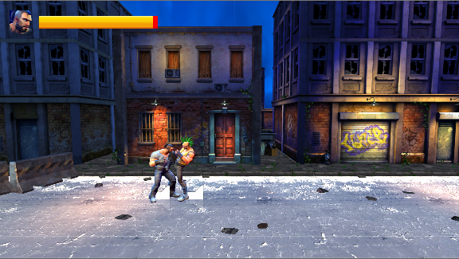
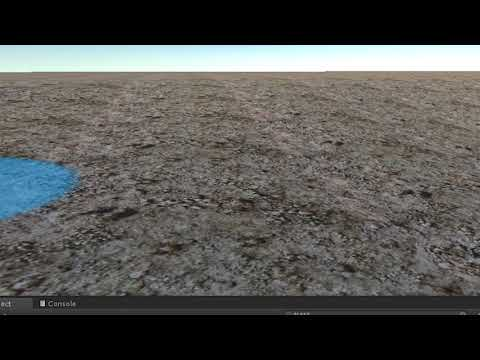
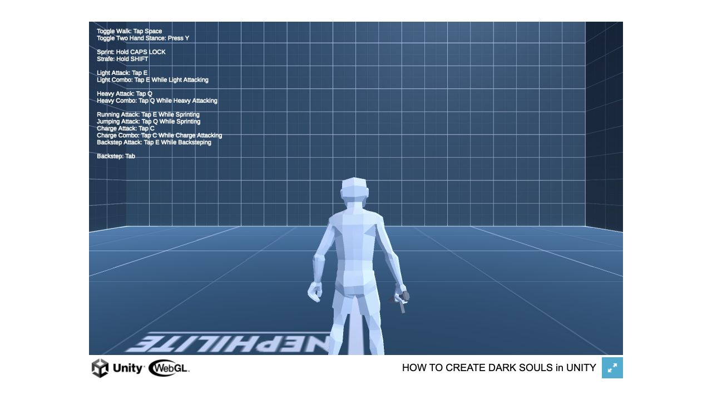
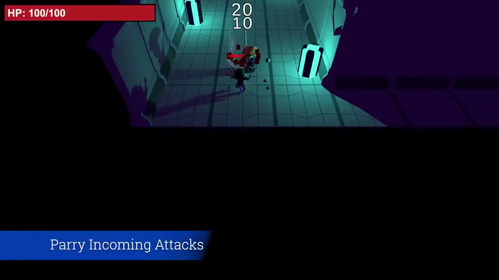
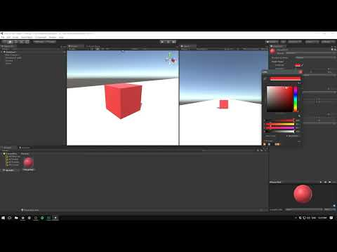

PROJECT COLLECTION
Unity projects
Individual projects, source downloads and preview images. Runtime verification is listed on each overview.










Unity
First Person Adventure
A first-person game project that puts the player’s viewpoint directly inside a three-dimensional scene. Movement and camera control provide the foundation for exploring and interacting with its levels.
- First-person perspective
- Player movement
- Three-dimensional scene exploration











Unity
First-Person Movement
A first-person game project that puts the player’s viewpoint directly inside a three-dimensional scene. Movement and camera control provide the foundation for exploring and interacting with its levels.
- First-person perspective
- Player movement
- Three-dimensional scene exploration


